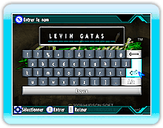
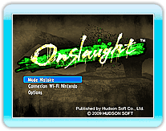
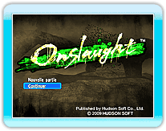

9 |
Commencer la partie |
 |
|
À l'écran titre, appuyez sur
Si vous jouez pour la première fois, l'écran suivant vous demandera d'introduire le nom de joueur à utiliser durant le jeu.
Les noms peuvent contenir jusqu'à 13 caractères (les noms contenant des termes inappropriés ne sont pas autorisés). Après avoir confirmé votre nom de joueur, choisissez votre pays de résidence à l'écran de sélection de pays. 
Ensuite, l'écran de sélection du mode de jeu s'affiche. Sélectionnez un mode avec le pointeur puis appuyez sur
La console Wii doit être connectée à un réseau pour utiliser la connexion Wi-Fi Nintendo. Si un fichier de sauvegarde existe, vous pouvez choisir entre "Nouvelle partie" et "Continuer" après avoir
sélectionné "Mode Histoire". Sélectionnez "Nouveau jeu" pour commencer une nouvelle partie ou "Continuer" pour continuer une partie précédente. |
 |
 |
 |